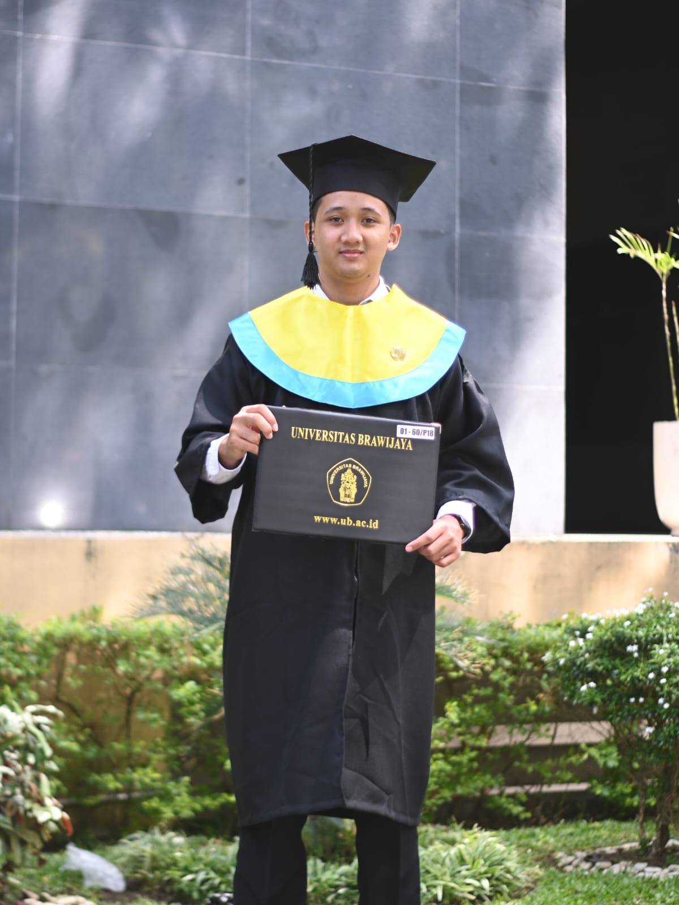

Hello there,
About
| Nama Lengkap | : M. Ammar Batistuta Haryawan |
|---|---|
| Jenis Kelamin | : Laki-laki |
| Tempat, Tanggal Lahir | : Banyumas, 6 Februari 2001 |
| Usia | : 22 tahun |
| Agama | : Islam |
| Alamat | : Kabupaten Purbalingga |
Let me introduce myself
My name is Ammar Batistuta and you can call me Tuta. I was born on
Banyumas, 6 Februari 2001. I am 22 years old. Freshgraduated form
Universitas Brawijaya majoring Computer Engineering. I like codings
a lot, this website is my first web programming project.
Furthermore, i also have learnd about C++ programming in my collage.
Arduino is what i wrote on my thesis. it contains C++ programming
for IoT about greenhouse monitoring system
Gallery
- 